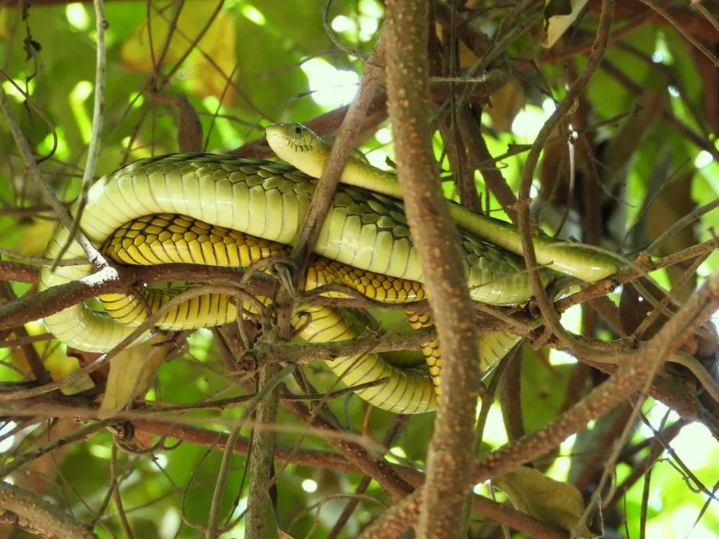

爬行动物 · 动物界
绿曼巴 Dendroaspis viridis

西非雨林中的树栖毒蛇，体色翠绿、身体细长，毒性很强，是非洲最危险的毒蛇之一，被咬须立即就医。
- 分类
- 门脊索动物门纲爬行纲目有鳞目科眼镜蛇科属曼巴蛇属
- 栖息环境
- 非洲西部的热带雨林、湿润林地与树冠层
- 地理分布
- 非洲西部几内亚湾沿岸的雨林地区
- 保护级别
- IUCN 无危（LC）；非中国原产，在中国无保护级别
物种志
绿曼巴体长 1.5–2 米，个别可达 2.4 米，身体极细长，尾部也长，适合在树枝间穿梭；头部狭长，眼睛较大，体色呈鲜绿或黄绿色，鳞片边缘常带黑色，形成细密的网纹，腹部淡黄绿色。它行动敏捷，是典型的树栖蛇类。
它分布于非洲西部的热带雨林和湿润林地，栖息于树冠层和灌木丛中，白天活动，捕食鸟类、蜥蜴、蛙类和小型哺乳动物。每年繁殖季雌蛇产卵 6–15 枚，孵化期约 60–90 天。绿曼巴毒性很强，毒液以神经毒素为主，被咬后可能出现呼吸麻痹，须立即就医并使用抗蛇毒血清；它遇人多会迅速逃离，但受惊或被困时攻击速度极快，野外遇到时应保持距离。
形态与习性
- 食性鸟类、蜥蜴、蛙类和小型哺乳动物
- 体长1.5–2 m，最长约 2.4 m
- 寿命约 10–15 年
- 繁殖卵生，6–15 枚，孵化 60–90 天
- 活动节律昼行性，树栖
- 毒性神经毒素为主，被咬须立即就医
趣味知识
- 绿曼巴体色鲜绿，身体细长，是典型的树栖毒蛇。
- 它的移动速度很快，受惊时能在树枝间迅速逃窜。
- 绿曼巴毒性很强，被咬后必须尽快使用抗蛇毒血清。